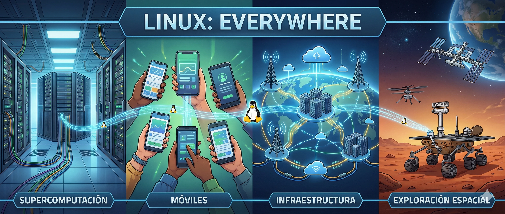

1. El Legado UNIX
Antes de que existiera Linux, el mundo de la informática de alto rendimiento estaba gobernado por UNIX. Nacido en los laboratorios Bell de AT&T a finales de los 60 (gracias a leyendas como Ken Thompson y Dennis Ritchie), UNIX era un sistema operativo potente, multiusuario y multitarea. Su gran revolución fue haber sido reescrito en lenguaje C, lo que lo hacía portable a diferentes arquitecturas de hardware.
Sin embargo, durante los años 80, UNIX se fragmentó y se privatizó. Lo que antes era un entorno de colaboración académica se convirtió en una guerra de licencias costosas y código cerrado (AIX de IBM, HP-UX, Solaris).
Para un estudiante de informática promedio, acceder al código fuente de un sistema operativo real para aprender cómo funcionaba "por dentro" era legal y económicamente imposible. Aquí entra en juego Minix, creado por el profesor Andrew S. Tanenbaum: un clon de UNIX diseñado con fines educativos, pero con una licencia que limitaba su modificación y distribución. El escenario estaba listo para una alternativa libre.
2. "Solo es un hobby"
El 25 de agosto de 1991, Linus Torvalds publicó en el grupo de noticias comp.os.minix su famoso mensaje: Hola a todos... estoy haciendo un sistema operativo (gratuito) (solo un hobby, no será grande ni profesional como gnu) para clones AT 386(486)...
Lo que comenzó como un emulador de terminal para acceder a los servidores de la universidad, pronto se convirtió en un kernel funcional. Sin embargo, la arquitectura elegida por Linus desató una de las discusiones técnicas más famosas de la historia: El debate Microkernel vs. Kernel Monolítico.
La postura de Tanenbaum (Minix): Defendía el diseño de Microkernel. En teoría, es más estable y moderno porque los servicios del sistema (como el sistema de archivos o los drivers de red) se ejecutan en el espacio de usuario, separados del núcleo central. Si un driver falla, el sistema no colapsa. Tanenbaum le dijo famosamente a Linus: LINUX is obsolete
(LINUX es obsoleto).
La postura de Torvalds (Linux): Optó por un Kernel Monolítico. Todos los servicios esenciales (gestión de memoria, CPU, drivers) residen dentro del mismo espacio de memoria del kernel. Linus argumentó que, aunque el microkernel es teóricamente superior, en la práctica (en 1991) era complejo y lento debido al paso de mensajes. El diseño monolítico era pragmático, rápido y funcionaba eficientemente en la arquitectura Intel 386.
- Servicios ejecutándose en espacio de usuario
- Comunicación basada en paso de mensajes (IPC)
- Alta modularidad y aislamiento de fallos
- Servicios en el mismo espacio de memoria del kernel
- Comunicación directa para máximo rendimiento
- Gestión centralizada y acceso directo al hardware
Linus ganó esta batalla no con teoría, sino con código funcional. La comunidad prefirió un sistema que funcionaba ya y que podían modificar, frente a un sistema académicamente perfecto pero restrictivo.
3. Modelo "Bazar"
Tras el debate, quedó claro por qué Linux sobreviviría: la licencia GPL. Linus decidió liberar su kernel bajo la Licencia Pública General de GNU (creada por Richard Stallman). Esto garantizaba que cualquiera podía ver, modificar y mejorar el código, siempre que los cambios se mantuvieran libres.
Técnicamente, Linux llenó el último hueco que faltaba en el proyecto GNU. Stallman y su equipo habían creado compiladores (GCC), editores (Emacs) y shells (Bash), pero les faltaba un kernel (su propio proyecto, Hurd, estaba estancado debido a la complejidad de su diseño de microkernel).
La unión de GNU + Linux creó un sistema operativo completo. A diferencia del modelo "Catedral" (software propietario desarrollado en secreto), Linux adoptó el modelo "Bazar" (descrito por Eric S. Raymond): Release early, release often
(Lanza pronto, lanza a menudo). Miles de desarrolladores empezaron a enviar parches para mejorar el soporte de hardware, optimizar el planificador de procesos (scheduler) y robustecer la pila TCP/IP. La inteligencia colectiva superó al desarrollo cerrado.
4. El Enemigo Público
A finales de los 90, Linux ya no era un juguete. Servidores web de todo el mundo empezaron a migrar de Windows NT a Linux debido a su estabilidad y coste cero. Esto despertó al gigante: Microsoft.
En 1998, se filtraron los "Documentos de Halloween" , una serie de memorandos confidenciales de Microsoft. En ellos, los ingenieros de Microsoft admitían que el software de código abierto (FOSS) amenazaba su modelo de negocio y reconocían la superioridad técnica de Linux en ciertos aspectos. Su estrategia fue "FUD" (Fear, Uncertainty, Doubt - Miedo, Incertidumbre y Duda) para asustar a las empresas que querían adoptar Linux.
Steve Ballmer, CEO de Microsoft, llegó a llamar a Linux un cáncer que se adhiere a todo lo que toca
en referencia a la licencia GPL. Hubo batallas legales, intentos de patentes agresivas y campañas de desprestigio. Sin embargo, la superioridad técnica del kernel en servidores y la flexibilidad para adaptarse a cualquier arquitectura (desde supercomputadoras hasta routers) hicieron que Linux fuera imparable.
5. El Kernel del Mundo
Hoy en día, la guerra ha terminado y la ironía es palpable: Microsoft es ahora uno de los mayores contribuyentes al código de Linux y utiliza Linux para gestionar gran parte de su propia nube (Azure).
Linux ha logrado una "dominación mundial" silenciosa pero absoluta:
- Supercomputación: El 100% de las 500 supercomputadoras más potentes del mundo corren Linux.
- Móviles: Android utiliza el kernel de Linux, lo que lo convierte en el SO más usado del planeta por número de dispositivos.
- Infraestructura: La nube (Cloud Computing), la bolsa de valores y la infraestructura crítica de Internet dependen de la estabilidad de Linux.
- Exploración Espacial: El helicóptero Ingenuity en Marte vuela gracias a Linux.
El "hobby" de Linus Torvalds demostró que la colaboración abierta y la excelencia técnica pueden superar a los modelos de negocio más restrictivos. El código es libre, y gracias a ello, el conocimiento también lo es.
